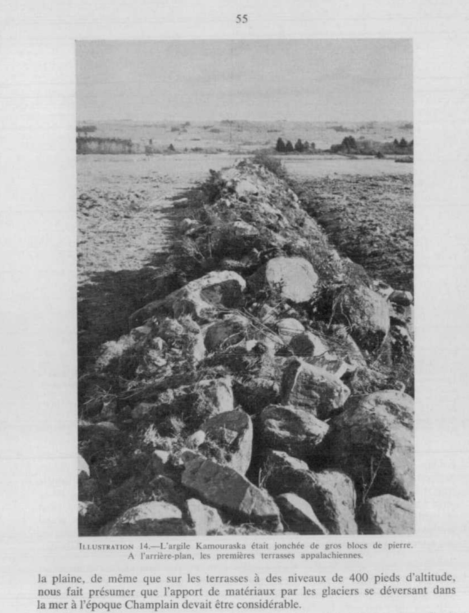
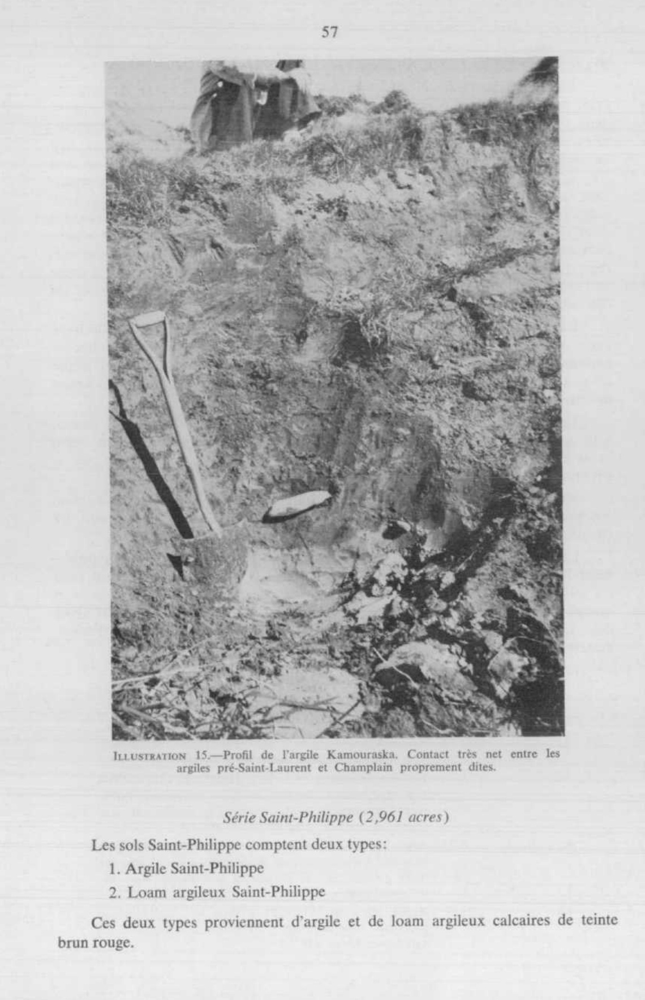
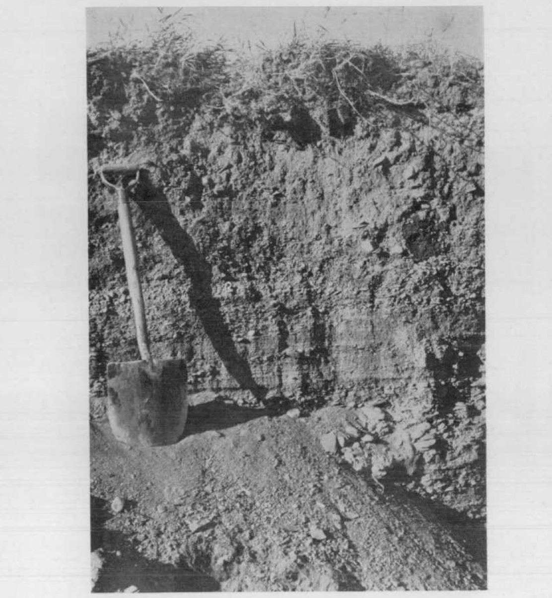
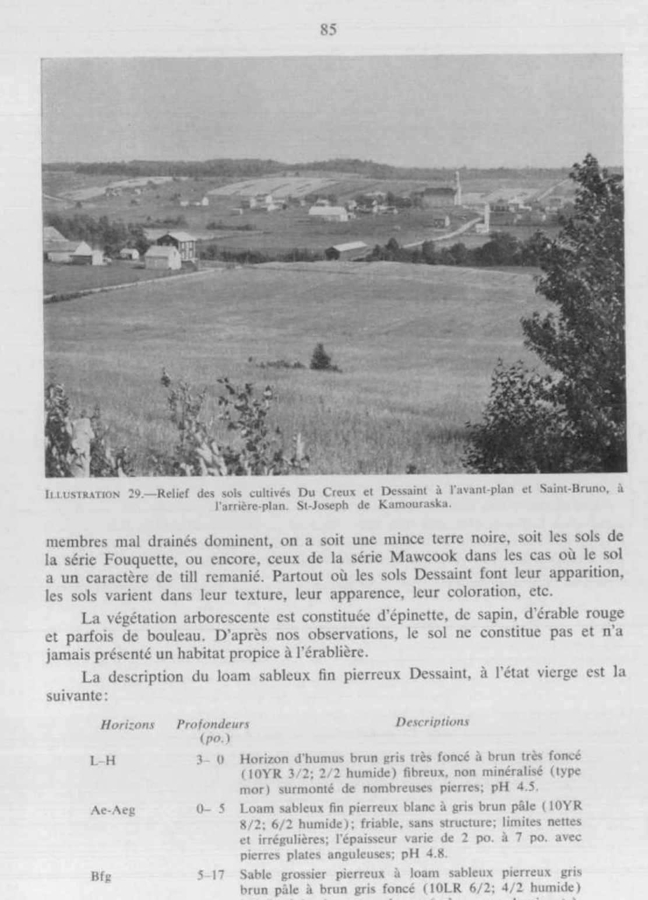
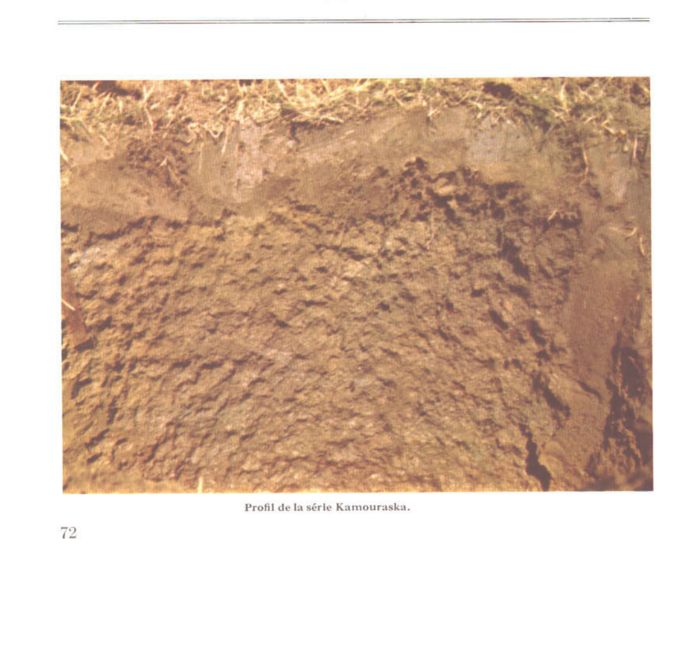
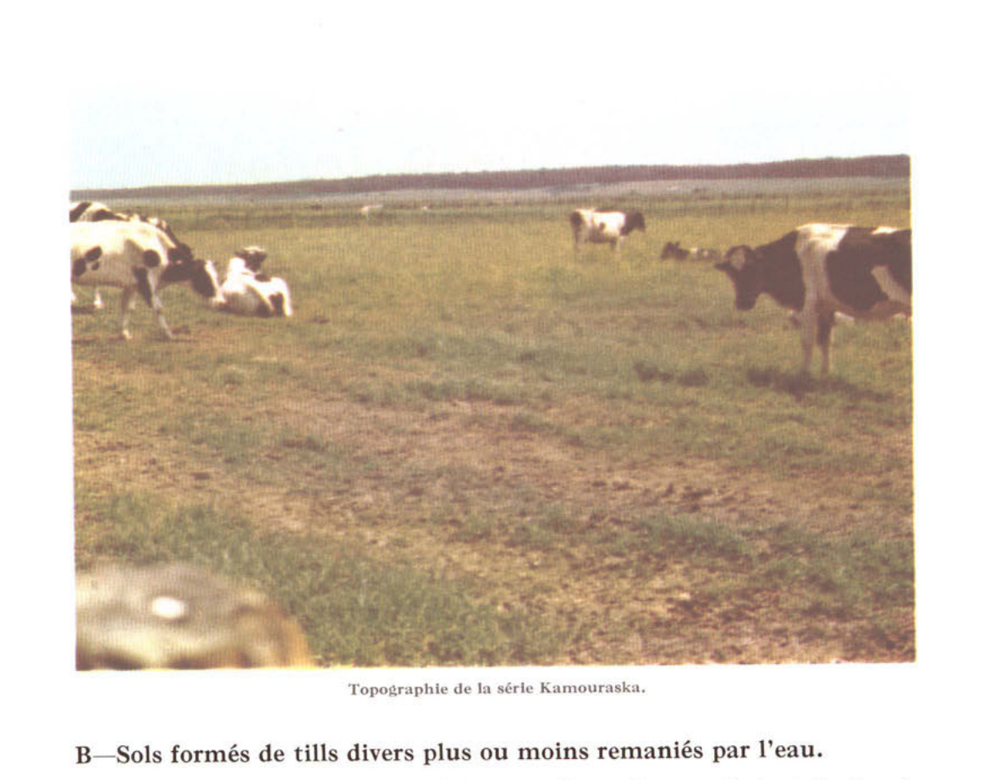
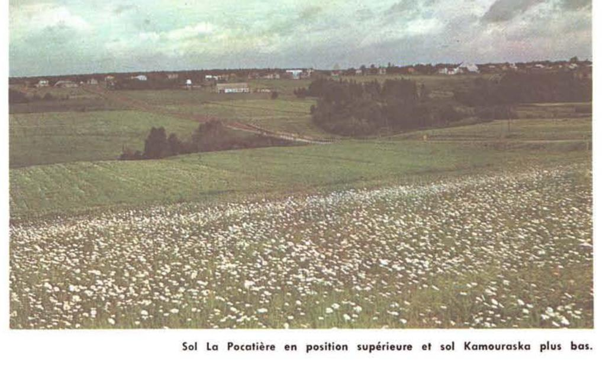
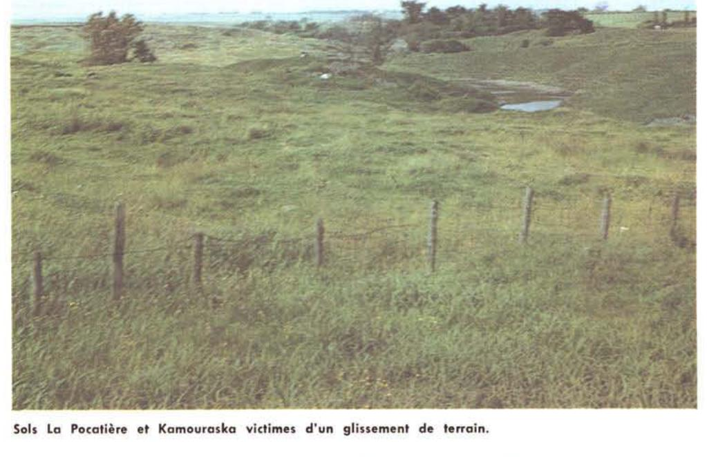

Identification & Caractéristiques Générales
La série Kamouraska se développe sur des sédiments minéraux d'origine estuarienne et marine déposés lors de la phase tardive de la mer de Champlain. Ces matériaux parentaux, de nature calcaire et de couleur grise, consistent en des argiles lourdes à très lourdes dont la teneur en fraction argileuse excède fréquemment 60 à 80 % en profondeur, et contiennent parfois des lits ou lentilles discontinus de sable fin ainsi que de rares inclusions de till glaciaire. Géomorphologiquement, ces sols occupent un second niveau de terrasses marines et d'anciennes plaine estuariennes s'échelonnant à des altitudes variant généralement entre 23 et 45 mètres, caractérisées par une topographie plane à faiblement ondulée. À l'état naturel, la surface de ces dépôts se distingue par la présence résiduelle de blocs erratiques d'origine laurentienne et appalachienne, bien que la majorité d'entre eux aient été épierrés et regroupés.
Le profil pédologique présente généralement une morphologie caractérisée par un drainage naturel défectueux à mauvais, fonction directe de la faible perméabilité inhérente aux horizons argileux lourds et de la planéité topographique. La battance de la nappe phréatique temporaire induit des conditions d'oxydoréduction se manifestant par la présence de mottages et de taches d'oxydation (rouille) réparties dans l'ensemble du sol. Sous l'horizon humifère de surface, on observe fréquemment un horizon éluvié de type Aeg, dont l'intégrité structurale influence la conductivité hydraulique verticale. Les couches sous-jacentes, d'une profondeur de 25 à 75 centimètres, développent une structure polyédrique ou prismatique favorisant une percolation modérée, particulièrement là où la texture présente des variations plus légères. La réaction du sol est généralement acide en surface, tandis que les carbonates primaires actifs se retrouvent communément à des profondeurs variant entre 60 et 120 centimètres.
Sur le plan agronomique, les sols de la série Kamouraska imposent des contraintes majeures liées à leur texture lourde, à leur plasticité élevée à l'état saturé et à la lenteur de leur ressuyage printanier, ce qui restreint la fenêtrée des interventions culturales. La mise en valeur agricole de ces terres requiert obligatoirement l'installation d'un réseau serré de drainage souterrain et un travail cultural rigoureux pour éviter la compaction et la dégradation de la structure. Malgré ces limitations, ces sols conviennent adéquatement à la production de grandes cultures et de cultures fourragères intensives lorsque la gestion hydrique est maîtrisée. L'ajustement du pH par des apports réguliers de amendements calciques et dolomitiques est également requis pour optimiser la fertilité chimique et la disponibilité des éléments nutritifs.
Caractères Distinctifs & Morphologie Génétique (Comté de Dorchester — Page 22)
- Topographie : horinzontale
- Drainage : mauvais
- Pierrosité : modérément pierreux — 1*
- Grand-groupe génétique : gleysol
- Degré d'érosion : nul #
- Classes d'utilisation : (C) 2W à 3W** (Q) 2d ##
- Association géographique : série Beaurivage
- Végétation naturelle : ormes
Classification Taxonomique & Environnement Pédologique
| Ordre Pédologique | Gleysolique |
|---|---|
| Grand Groupe (SCSS) | Gleysol humique |
| Sous-Groupe Taxonomique | Gleysol humique orthique |
| Famille Pédologique | Argileuse-fine, mixte argileux, alcalin (calcaire) |
| Mode de Dépôt Parental | Estuarien |
| Classe de Drainage Naturel | Mal drainé |
| Régime Thermique & Humidité | Frais / Subaquique |
Description Morphologique du Profil Type
Séquences génétiques des horizons pédologiques caractérisant le profil type représentatif de la série Kamouraska :
Profil cultivé (agricole) — Comté de Charlevoix
✓ Source : Comté de Charlevoix — Page 51Couleur Munsell : 10YR 3/2
Structure & Consistance : Polyédrique à granulaire
Description morphologique : Argile lourde brun-gris très foncé (10 YR 3/2 h); polyédrique, modérée, fine; friable; racines abondantes; limite abrupte, régulière; neutre.
Couleur Munsell : 10YR 5/1
Structure & Consistance : Polyédrique à granulaire
Description morphologique : Argile lourde grise à brun-gris (10 YR 5/1-5/2 h); marbrures peu nombreuses, petites, distinctes; amorphe; très ferme; limite distincte, interrompue.
Couleur Munsell : 10YR 5/2
Structure & Consistance : Polyédrique à granulaire
Description morphologique : Argile lourde brun-gris (10 YR 5/2 h); marbrures très nombreuses, petites, distinctes; polyédrique, modérée, moyenne; ferme; limite distincte, ondulée; faiblement alcalin.
Couleur Munsell : 10YR 6/1
Structure & Consistance : Polyédrique à granulaire
Description morphologique : Argile lourde grise à gris-brun clair (10 YR 6/1-6/2 h); marbrures assez nombreuses, petites, distinctes; polyédrique, faible; moyenne; ferme; limite graduelle, ondulée; faiblement alcalin.
Couleur Munsell : 10YR 4/1
Structure & Consistance : Polyédrique à granulaire
Description morphologique : Argile gris foncé (10 YR 4/1 h); marbrures peu nombreuses, petites, faibles; amorphe; très plastique; faiblement alcalin.
Profil cultivé (agricole) — Comté de Dorchester
✓ Source : Comté de Dorchester — Page 22Couleur Munsell : 2.5Y 6/2
Structure & Consistance : Grossièrement granulaire à finement polyédrique
Description morphologique : Loam limoneux gris-brun clair (2.5Y 6/2); structure grossièrement granulaire à finement polyédrique; consistance ferme, friable et perméable; pH: 5.0.
Couleur Munsell : 5Y 8/2
Structure & Consistance : Granulaire moyenne
Description morphologique : Loam limoneux blanc (5Y 8/2); structure granulaire moyenne; consistance ferme; perméable.
Couleur Munsell : 5Y 5/2 (matrice), 10YR 5/6 (marbrures)
Structure & Consistance : Polyédrique modérément à faiblement développée
Description morphologique : Loam argileux gris-olive (5Y 5/2); structure polyédrique modérément à faiblement développée; mouchetures nombreuses de couleur brun-jaune (10YR 5/6); ferme; pH: 5.8.
Couleur Munsell : 5YR 6/1 (matrice), 10YR 5/6 (marbrures)
Structure & Consistance : Polyédrique faiblement développée
Description morphologique : Loam limono-argileux gris (5YR 6/1) avec mouchetures de couleur brun-jaune (10YR 5/6); structure polyédrique faiblement développée; ferme; pH: 6.6.
Profil représentatif — Comté de Kamouraska
✓ Source : Comté de Kamouraska — Page 54Couleur Munsell : 10YR 3/2
Structure & Consistance : Grossièrement granulaire à finement polyédrique que modérément ferme à l'état sec
Description morphologique : Argile (*) brun très foncé (10YR 3/2, h.) à noire, structure grossièrement granulaire à finement polyédrique que modérément ferme à l'état sec, pH 5.8.
Couleur Munsell : 10YR 5/1
Structure & Consistance : Polyédrique à granulaire
Description morphologique : Argile lourde grise (10YR 5/1, sec) massive, consistance dure à très dure à l'état sec, avec mouchetures brun pâle, petites, très nombreuses, peu contrastantes. Horizon caractéristique de 3 à 6 pouces, décelable même en terrain cultivé, pH 5.7.
Couleur Munsell : 10YR 5/1
Structure & Consistance : Polyédrique à agrégats moyens à grossiers
Description morphologique : Argile lourde, grise (10YR 5/1; 4/1, sec), structure polyédrique à agrégats moyens à grossiers, modérément développés, fermes, avec de nombreuses mouchetures brun jaune, nombreuses et très contrastantes, pH 6.7.
Couleur Munsell : 10YR 5/1
Structure & Consistance : Polyédrique à agrégats moyens à grossiers et peu développés
Description morphologique : Argile lourde de coloration grise (10YR 5/1, 6/1, sec), structure polyédrique à agrégats moyens à grossiers et peu développés, fermes, avec mouchetures brun jaune distinctes, pH 7.2.
Couleur Munsell : 5YR 4/1
Structure & Consistance : Polyédrique à agrégats grossiers peu développés ou sans structure
Description morphologique : Argile lourde de coloration grise (5YR 4/1, 6/1, sec), structure polyédrique à agrégats grossiers peu développés ou sans structure, consistance ferme, très plastique lorsqu'humide, mouchetures brun jaune peu visibles, pH 7.4.
Couleur Munsell : 5YR 4/1
Structure & Consistance : Polyédrique à granulaire
Description morphologique : Argile lourde à très lourde de coloration nettement grise (5YR 4/1, 6/1, humide) et calcaire.
Profil représentatif — Comté de Lévis
✓ Source : Comté de Lévis — Page 72Couleur Munsell : 10YR 2/2, 10YR 2/1
Structure & Consistance : Polyédrique à granulaire
Description morphologique : Loam brun très foncé (10YR 2/2) à noir (10YR 2/1). Granulaire; pH: 5.9.
Couleur Munsell : 5YR 5/1
Structure & Consistance : Polyédrique
Description morphologique : Argile limoneuse grise (5YR 5/1). Structure polyédrique. Ferme. Mouchetures de rouille; pH: 6.9.
Couleur Munsell : 10YR 6/1
Structure & Consistance : Polyédrique
Description morphologique : Argile lourde de coloration grise (10YR 6/1). Structure polyédrique. Ferme. Plastique lorsque humide. Mouchetures de rouille; pH: 7.5. Parfois effervescent avec HCl dilué.
Couleur Munsell : 5YR 4/1
Structure & Consistance : Polyédrique à granulaire
Description morphologique : Argile limoneuse à argile lourde de couleur grise (5YR 4/1). Plastique; calcaire.
Profil cultivé (agricole) — Comté de L'islet — Phase occupe une
✓ Source : Comté de L'islet — Page 41Couleur Munsell : 10YR 3/2, 10YR 2/2
Structure & Consistance : Granulaire grossière à polyédrique fine
Description morphologique : Argile brun-gris très foncé (10 YR 3/2 s), à noire (10 YR 2/2 h); structure granulaire grossière à polyédrique fine; modérément ferme à l'état sec; pH 5,8.
Couleur Munsell : 10YR 5/1
Structure & Consistance : Polyédrique à granulaire
Description morphologique : Argile lourde grise à gris foncé (10 YR 5/1 s; 4/1 h); massive; consistance dure à très dure à l'état sec; mouchetures brun pâle, petites, nombreuses, marquées; horizon d'une épaisseur de 8 à 15 cm, visible même en terrain cultivé; pH 5,7.
Couleur Munsell : 10YR 5/1
Structure & Consistance : Polyédrique à agrégats moyens et grossiers
Description morphologique : Argile lourde grise à gris foncé (10 YR 5/1; 4/1 h); structure polyédrique à agrégats moyens et grossiers, modérément développés, consistance ferme; nombreuses mouchetures brun-jaune, moyennes et très marquées; pH 6,7.
Couleur Munsell : 10YR 5/4 (matrice), 10YR 6/1 (marbrures)
Structure & Consistance : Polyédrique à agrégats moyens à grossiers peu développés
Description morphologique : Argile lourde gris clair à grise (10 YR 6/1 5/1 h); structure polyédrique à agrégats moyens à grossiers peu développés; consistance ferme; mouchetures brun-jaune (10 YR 5/4 h); marquées; pH 7,2.
Couleur Munsell : 10YR 6/1
Structure & Consistance : Polyédrique à agrégats grossiers peu développés
Description morphologique : Argile lourde de coloration gris clair à gris foncé (10 YR 6/1; 4/1 h); structure polyédrique à agrégats grossiers peu développés; consistance ferme; très plastique à l'état humide; mouchetures brun-jaune distinctes; pH 7,4.
Couleur Munsell : 5YR 6/1
Structure & Consistance : Polyédrique à granulaire
Description morphologique : Argile lourde à très lourde gris clair à gris foncé (5 YR 6/1; 4/1 h) et calcaire.
Profil cultivé (agricole) — Comté de Rivière-du-loup — Phase texturale
✓ Source : Comté de Rivière-du-loup — Page 36Couleur Munsell : 10YR 3/2, 10YR 2/2
Structure & Consistance : Granulaire grossière à polyédrique fine
Description morphologique : Argile brun-gris très foncé (10 YR 3/2 s), à noire (10 YR 2/2 h); structure granulaire grossière à polyédrique fine; modérément ferme à l'état sec; pH 5,8.
Couleur Munsell : 10YR 5/1
Structure & Consistance : Polyédrique à granulaire
Description morphologique : Argile lourde grise à gris foncé (10 YR 5/1 s; 4/1 h); massive; consistance dure à très dure à l'état sec; mouchetures brun pâle, petites, très nombreuses, marquėes; horizon d'une épaisseur de 8 à 15 cm, visible même en terrain cultivé; pH 5,7.
Couleur Munsell : 10YR 5/1
Structure & Consistance : Polyédrique à agrégats moyens et grossiers
Description morphologique : Argile lourde grise à gris foncé (10 YR 5/1; 4/1 h); structure polyédrique à agrégats moyens et grossiers, modérément développés; consistance ferme; nombreuses mouchetures brun-jaune, moyennes et très marquées; pH 6,7.
Couleur Munsell : 10YR 5/4 (matrice), 10YR 6/1 (marbrures)
Structure & Consistance : Polyédrique à agrégats moyens à grossiers peu développés
Description morphologique : Argile lourde gris clair à grise (10 YR 6/1; 5/1 h); structure polyédrique à agrégats moyens à grossiers peu développés; consistance ferme; mouchetures brun-jaune (10 YR 5/4 h), marquées; pH 7,2.
Couleur Munsell : 10YR 6/1
Structure & Consistance : Polyédrique à agrégats grossiers peu développés
Description morphologique : Argile lourde de coloration gris clair à gris foncé (10 YR 6/1; 4/1 h); structure polyédrique à agrégats grossiers peu développés; consistance ferme; très plastique à l'état humide; mouchetures brun-jaune distinctes; pH 7,4.
Couleur Munsell : 5YR 6/1
Structure & Consistance : Polyédrique à granulaire
Description morphologique : Argile lourde à très lourde gris clair à gris foncé (5 YR 6/1; 4/1 h) et calcaire.
Profil représentatif — Comté de Bellechasse
✓ Source : Comté de Bellechasse — Page 25Couleur Munsell : 10YR 3/2
Structure & Consistance : Polyédrique à agrégats moyens et fins
Description morphologique : Argile brun gris très foncé (10YR 3/2) avec structure polyédrique à agrégats moyens et fins; modérément fermes; friable et perméable; pH 5.9.
Couleur Munsell : 10YR 5/1
Structure & Consistance : Polyédrique à granulaire
Description morphologique : Argile grise (10YR 5/1) massive et de consistance dure à l'état sec; mouchetures nombreuses mais petites et de couleur brune; imperméable; pH 5.8.
Couleur Munsell : 10YR 5/1
Structure & Consistance : Polyédrique modérément à faiblement développée
Description morphologique : Argile grise à gris foncé (10YR 5/1, 4/1); structure polyédrique modérément à faiblement développée; mouchetures nombreuses et constantes de couleur brun jaune; peu friable et peu perméable; pH 6.6.
Couleur Munsell : 10YR 5/1
Structure & Consistance : Polyédrique faiblement développée
Description morphologique : Argile grise (10YR 5/1) avec structure polyédrique faiblement développée; mouchetures brun jaune; peu friable et peu perméable; pH 7.2.
Couleur Munsell : 10YR 4/1
Structure & Consistance : Polyédrique peu développée
Description morphologique : Argile gris foncé (10YR 4/1) avec structure polyédrique peu développée, mouchetures brun jaune peu visibles; plastique et imperméable; pH 7.4.
Couleur Munsell : 10YR 5/1
Structure & Consistance : Polyédrique à granulaire
Description morphologique : Argile grise (10YR 5/1); massive et calcaire.
Profils Photographiques & Planches de Terrain
Documents iconographiques, figures pédologiques et coupes de terrain documentées dans les mémoires d'inventaire pour de la série Kamouraska :








Propriétés Physico-Chimiques & Analyses de Laboratoire
| Horizon | Prof. limite | pH (H₂O) | M.O. % | C tot. % | N tot. % | C.E.C. (cmol/kg) | Sable % | Limon % | Argile % | P Meh3 (mg/kg) | K (cmol/kg) | Ca (cmol/kg) | MVA (g/cm³) |
|---|---|---|---|---|---|---|---|---|---|---|---|---|---|
| Ap1 | 11.0 cm | 6.49 | 7.3 | 4.23 | 0.35 | 31.8 | 0.6 | 28.8 | 70.6 | 53.3 | 1.06 | 17.35 | 1.13 |
| Ap2 | 27.0 cm | 6.56 | 6.45 | 3.74 | 0.3 | 31.7 | 0.5 | 29.7 | 69.8 | 31.0 | 0.65 | 17.5 | 1.24 |
| B | — | 6.82 | 3.11 | 1.81 | 0.15 | 30.2 | 0.5 | 28.8 | 70.7 | 9.1 | 0.56 | 16.26 | 1.4 |
Particularités Régionales, Phases & Variantes Pédologiques
Déclinaisons régionales, faciès texturaux, phases d'érosion ou de pierrosité et variantes cartographiées par étude pour de la série Kamouraska :
| Étude Régionale | Symbole | Appellation / Phase / Variante | Différenciation avec la série type (Analyse pédologique) |
|---|---|---|---|
| Comté de Bellechasse | K |
Kamouraska argile | Modalité modale de référence (type de base de la série). |
| Comté de Charlevoix | K |
Kamouraska argile lourde | Faciès d'argile très lourde et plastique, plus difficile à égoutter. |
| Comté de Dorchester | K |
Kamouraska loam limoneux | Faciès plus limoneux (loam limoneux), offrant une forte rétention en eau mais vulnérable à la battance. |
| Comté de Kamouraska | K |
Kamouraska argile | Conforme à la série type de référence (caractéristiques texturales et drainage identiques). |
Kl |
Kamouraska loam argileux | Faciès textural de surface loam argileux (distinct du argile de référence). | |
| Comté de Lévis | Kl |
Kamouraska loam | Faciès à texture loameuse plus aérée et perméable que l'argile de référence (travail du sol plus aisé et meilleur égouttement). |
| Comté de L'islet | K |
Kamouraska argile | Conforme à la série type de référence (caractéristiques texturales et drainage identiques). |
Kl |
Kamouraska loam argileux | Faciès textural de surface loam argileux (distinct du argile de référence). | |
| Comté de Matane | KA4-c |
Kamouraska loam limono-argileux à argile pente de 3-5% | Phase de pente (3-5%) avec risque de ruissellement et d'érosion hydrique accrue. |
| Comté de Rivière-du-loup | K |
Kamouraska argile | Conforme à la série type de référence (caractéristiques texturales et drainage identiques). |
| Îles d'Orléans, aux Coudres et aux Grues | KrkA |
Kamouraska loam argileux 0 à 0.5% de pente | Faciès textural de surface loam argileux (distinct du argile de référence). |
KrkA-1 |
Kamouraska loam argileux 0 à 0.5% de pente pierrosité 1 | Faciès textural de surface loam argileux (distinct du argile de référence). | |
KrkA-2 |
Kamouraska loam argileux 0 à 0.5% de pente pierrosité 2 | Faciès textural de surface loam argileux (distinct du argile de référence). | |
KrkB |
Kamouraska loam argileux 0.5 à 2% de pente | Faciès textural de surface loam argileux (distinct du argile de référence). | |
KrkB-1 |
Kamouraska loam argileux 0.5 à 2% de pente pierrosité 1 | Faciès textural de surface loam argileux (distinct du argile de référence). | |
KrkB-2 |
Kamouraska loam argileux 0.5 à 2% de pente pierrosité 2 | Faciès textural de surface loam argileux (distinct du argile de référence). | |
KrkB-s |
Kamouraska loam argileux 0.5 à 2% de pente phase sableuse | Faciès textural de surface loam argileux (distinct du argile de référence). | |
KrkB-s-1 |
Kamouraska loam argileux 0.5 à 2% de pente phase sableuse pierrosité 1 | Faciès textural de surface loam argileux (distinct du argile de référence). | |
KrkC |
Kamouraska argile 2 à 3% de pente | Conforme à la série type de référence (caractéristiques texturales et drainage identiques). | |
| Étude pédologique des îles d'Orl | KRK |
Série Kamouraska (Krk) | Conforme à la série type de référence (caractéristiques texturales et drainage identiques). |
Distribution Pédo-Paysagère & Représentativité Cartographique (Couverture PPS 2026)
- La Pocatière loam argileux (LPC) — co-occurrente dans 54 polygone(s)
- Beaurivage loam sableux grossier (BVG) — co-occurrente dans 15 polygone(s)
- Accumulations organiques (TNH) — co-occurrente dans 13 polygone(s)
Aptitudes Agronomiques, Hydropédologie & Conservation des Sols
Indicateurs Hydropédologiques & Vulnérabilité à l'Érosion (BDHP 2026)
Interprétation BDHP : Potentiel de ruissellement modérément faible. Infiltration modérée avec textures moyennes à modérément grossières.
Classement selon l'Inventaire des Terres du Canada (ITC / CLI) : Classe 2w.
- Potentiel agricole : Terroir adapté aux cultures régionales selon la texture dominante et la régie de drainage.
- Contraintes majeures : Mal drainé. Risque d'engorgement temporaire ou d'excès d'eau printanier.
- Gestion & Aménagement : Drainage souterrain ou superficiel préconisé sur les terres planes. Chaulage et apport organique régulier selon les bilans agronomiques.
- Cultures adaptées : Grandes cultures (maïs, soya, céréales), prairies fourragères et cultures maraîchères selon le contexte géomorphologique.